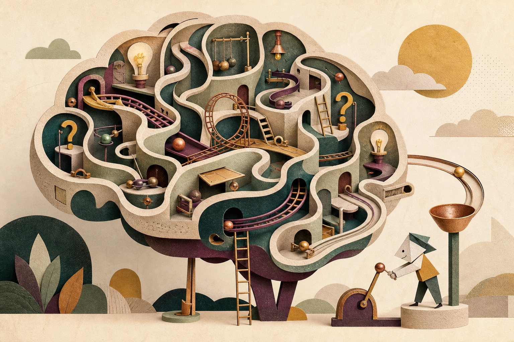

Speelhal 01 · solo
Amusement in het brein.
Je hoeft je brein niet altijd te verbeteren of volledig te begrijpen. Soms mag je het gewoon iets vreemds, kleins en nieuwsgierigs laten doen.
Jouw mini-proef
Ontdek wie er vandaag aan je stuur zit →
Kies een voorwerp in de kamer. Bedenk in dertig seconden drie volstrekt verkeerde toepassingen. De vierde mag bruikbaar zijn.